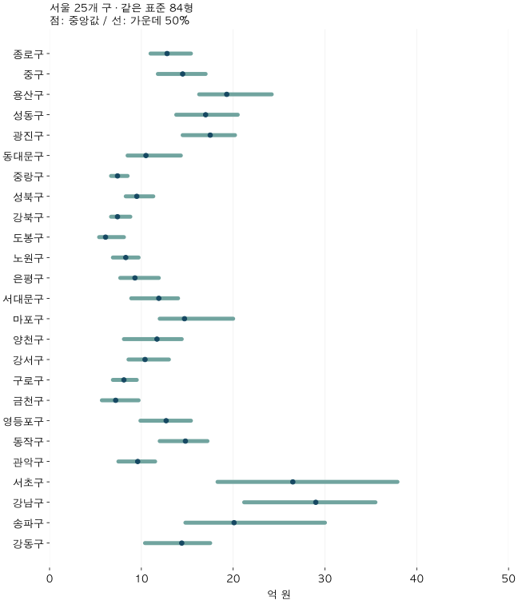
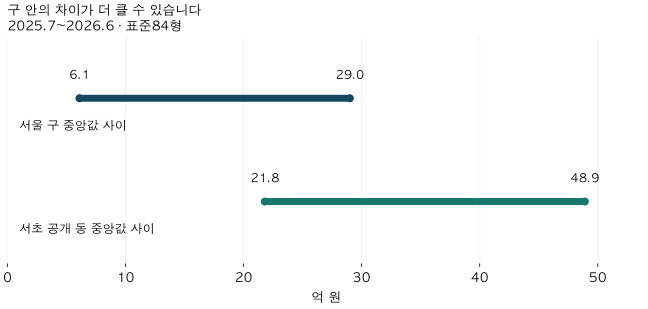

수도권 가격 지도 · 서울 구별 가격
서울 25구 아파트 가격 비교: 같은 84형, 최근 네 분기와 동별 차이
서울 25개 구의 표준 84형 아파트 가격을 2025년 3분기~2026년 2분기로 비교합니다. 중앙값·가격 분포·거래 규모, 구 안 법정동 차이와 거래 구성의 한계를 확인하세요.
분석 기간 · 2025년 7월~2026년 6월 · 서울 25개 구 | 자료 기준일 · 2026-10-04
서울에서 같은 84형 아파트를 찾으면 구에 따라 가격이 얼마나 달라질까요? 2026년 2분기 관측 중앙값은 도봉구 6.1억 원, 강남구 32.0억 원으로 약 5.2배입니다. 하지만 구 이름과 면적만 맞춘 가격표에는 거래된 단지의 차이가 남습니다. 최근 네 분기의 구별 가격과 거래 근거, 구 안 법정동의 범위를 함께 비교합니다.
구의 가격 순서를 비교할 때 대표값을 바꾸면 어떻게 달라지는지는 평균·중앙값·84형의 평당가 순위 비교에서 확인할 수 있습니다.
10억·15억 같은 명목 기준을 언제 넘었는지 궁금하다면 서울·경기의 첫 초과 가능~확인 분기에서 반락과 구성 조건까지 함께 비교해 보세요.
‘같은 84형’은 어떤 면적을 뜻하나요?
이 글의 주 비교는 84형(전용 25·26평형)입니다. 전용면적을 평으로 환산해 반올림한 두 평형을 묶습니다. 정확히 84㎡인 집이나 공급면적 84㎡를 뜻하지 않습니다. 면적 기준과 예외를 확인한 뒤 같은 기준으로 표를 읽어 보세요.
주 기간은 2025년 3분기부터 2026년 2분기까지입니다. 자료에는 2026년 9월 계약분까지 들어 있지만 최근 7~9월을 제외했습니다. 각 분기 말 당시 공개돼 있던 자료를 복원한 결과는 아니며, 자료 기준일인 2026년 10월 4일에 남아 있는 신고를 정리한 것입니다.
매매 계약 한 건을 같은 비중으로 세었습니다. 해제·직거래 등 정제 기준에 맞지 않는 거래와 토지임대부를 제외했습니다. 구 가격은 동 중앙값의 평균이 아니라 해당 구의 계약 전체에서 직접 계산한 중앙값입니다.
서울 25개 구의 중앙값은 네 분기 동안 어떻게 달랐나요?
같은 분기끼리 비교한 최고·최저 배수는 약 4.5배, 4.2배, 4.4배, 5.2배입니다. 첫 분기인 2025년 3분기에는 종로구가 가격 제시 기준에 못 미쳐 비교 가능한 24개 구 안의 범위입니다. 나머지 세 분기는 25개 구가 모두 기준을 충족합니다.
| 구 | 2025Q3 | 2025Q4 | 2026Q1 | 2026Q2 |
|---|---|---|---|---|
| 종로구 | 미제시 | 12.5 | 12.3 | 12.0 |
| 중구 | 13.9 | 14.0 | 12.4 | 16.5 |
| 용산구 | 17.8 | 19.4 | 18.5 | 20.4 |
| 성동구 | 16.3 | 16.3 | 17.0 | 18.5 |
| 광진구 | 16.5 | 18.4 | 19.0 | 18.0 |
| 동대문구 | 10.5 | 10.0 | 10.4 | 10.9 |
| 중랑구 | 7.3 | 7.3 | 7.5 | 7.5 |
| 성북구 | 9.1 | 9.6 | 9.4 | 10.0 |
| 강북구 | 7.2 | 7.1 | 7.4 | 7.7 |
| 도봉구 | 5.9 | 6.0 | 6.3 | 6.1 |
| 노원구 | 8.2 | 8.4 | 8.3 | 8.5 |
| 은평구 | 9.0 | 10.0 | 9.3 | 9.1 |
| 서대문구 | 12.4 | 12.8 | 10.7 | 11.0 |
| 마포구 | 14.3 | 14.7 | 13.4 | 15.9 |
| 양천구 | 11.6 | 12.0 | 11.0 | 12.0 |
| 강서구 | 10.5 | 10.8 | 10.0 | 10.4 |
| 구로구 | 8.4 | 8.4 | 8.0 | 7.8 |
| 금천구 | 6.9 | 7.2 | 7.1 | 7.2 |
| 영등포구 | 12.0 | 12.9 | 12.2 | 13.4 |
| 동작구 | 14.0 | 14.4 | 14.8 | 15.6 |
| 관악구 | 9.4 | 9.6 | 10.0 | 9.2 |
| 서초구 | 23.5 | 20.2 | 23.0 | 31.0 |
| 강남구 | 26.4 | 25.0 | 27.3 | 32.0 |
| 송파구 | 17.7 | 18.1 | 20.1 | 27.5 |
| 강동구 | 14.3 | 13.5 | 13.0 | 15.6 |
단위: 억 원. 각 값은 0.1억 원 단위로 반올림했습니다. 미제시는 가격 0원이 아닙니다. 구별 표는 행정구 코드 순서입니다.
표에서 한 구의 중앙값이 높아져도 같은 집이 그만큼 올랐다고 해석할 수는 없습니다. 분기마다 거래된 단지·층·연식과 계약 시점이 달라지기 때문입니다. 배수는 반올림 전 중앙값으로 계산하므로 화면의 두 가격을 나눈 값과 조금 다를 수 있습니다.
두 면적 기준의 최고·최저 구와 배수 펼치기
| 면적·기간 | 낮은 구 | 낮은 값 | 높은 구 | 높은 값 | 배수 | 금액 차 | 가격 제시 구 |
|---|---|---|---|---|---|---|---|
| 84형 · 전용 25·26평형 · 2025년 3분기 | 도봉구 | 5.9 | 강남구 | 26.4 | 4.5배 | 20.5 | 24 |
| 84형 · 전용 25·26평형 · 2025년 4분기 | 도봉구 | 6.0 | 강남구 | 25.0 | 4.2배 | 19.0 | 25 |
| 84형 · 전용 25·26평형 · 2026년 1분기 | 도봉구 | 6.3 | 강남구 | 27.3 | 4.4배 | 21.0 | 25 |
| 84형 · 전용 25·26평형 · 2026년 2분기 | 도봉구 | 6.1 | 강남구 | 32.0 | 5.2배 | 25.9 | 25 |
| 84형 · 전용 25·26평형 · 2025.7~2026.6 합계 | 도봉구 | 6.1 | 강남구 | 29.0 | 4.8배 | 22.9 | 25 |
| 84㎡대 · 84≤전용면적<85㎡ · 2025년 3분기 | 도봉구 | 6.3 | 서초구, 강남구 | 26.0 | 4.1배 | 19.7 | 24 |
| 84㎡대 · 84≤전용면적<85㎡ · 2025년 4분기 | 도봉구 | 6.0 | 강남구 | 23.8 | 4.0배 | 17.8 | 25 |
| 84㎡대 · 84≤전용면적<85㎡ · 2026년 1분기 | 도봉구 | 6.4 | 강남구 | 26.5 | 4.2배 | 20.1 | 25 |
| 84㎡대 · 84≤전용면적<85㎡ · 2026년 2분기 | 도봉구 | 6.2 | 서초구 | 32.5 | 5.2배 | 26.3 | 25 |
| 84㎡대 · 84≤전용면적<85㎡ · 2025.7~2026.6 합계 | 도봉구 | 6.2 | 강남구 | 29.0 | 4.7배 | 22.8 | 25 |
중앙값 한 개로 그 구의 예산을 정할 수 있을까요?
중앙값 주변의 범위도 함께 봐야 합니다. 아래 그림은 네 분기 계약을 합친 분포입니다. 점은 중앙값, 선은 거래금액의 하위 25%부터 상위 25%까지입니다. 선 바깥에도 나머지 절반의 거래가 있습니다.

네 분기를 합친 구 중앙값은 도봉구 6.1억 원부터 강남구 29.0억 원까지로 약 4.8배입니다. 이것은 네 분기 중앙값 네 개를 평균한 값이 아닙니다. 거래가 많은 분기에 더 많은 계약이 들어가므로 분기별 가격표와 함께 읽어야 합니다.
분기별 거래 규모와 사분위수 전체 표 펼치기
거래 규모는 정확 건수 대신 구간으로 표시합니다. 면적 기준을 넓혔을 때 새로 들어온 거래가 적으면 두 면적의 건수 구간을 함께 유보했습니다. 가격은 각 집단의 표본 기준을 따로 적용합니다.
84형 · 전용 25·26평형 · 2025년 3분기
| 구 | 거래 규모: 건 | 하위 25% / 중앙값 / 상위 25% |
|---|---|---|
| 종로구 | 10~39 | 가격 유보 |
| 중구 | 건수 구간 유보 | 12.4 / 13.9 / 15.2 |
| 용산구 | 건수 구간 유보 | 15.4 / 17.8 / 22.5 |
| 성동구 | 건수 구간 유보 | 13.3 / 16.3 / 19.5 |
| 광진구 | 100~199 | 13.4 / 16.5 / 19.1 |
| 동대문구 | 200~499 | 8.3 / 10.5 / 14.5 |
| 중랑구 | 건수 구간 유보 | 6.5 / 7.3 / 8.4 |
| 성북구 | 건수 구간 유보 | 8.0 / 9.1 / 10.8 |
| 강북구 | 건수 구간 유보 | 6.5 / 7.2 / 8.7 |
| 도봉구 | 건수 구간 유보 | 5.3 / 5.9 / 8.1 |
| 노원구 | 200~499 | 6.7 / 8.2 / 9.6 |
| 은평구 | 200~499 | 7.1 / 9.0 / 11.5 |
| 서대문구 | 200~499 | 9.0 / 12.4 / 13.5 |
| 마포구 | 200~499 | 12.3 / 14.3 / 19.9 |
| 양천구 | 200~499 | 9.7 / 11.6 / 15.5 |
| 강서구 | 200~499 | 8.6 / 10.5 / 13.5 |
| 구로구 | 200~499 | 7.0 / 8.4 / 9.7 |
| 금천구 | 건수 구간 유보 | 5.7 / 6.9 / 10.8 |
| 영등포구 | 200~499 | 9.8 / 12.0 / 15.0 |
| 동작구 | 건수 구간 유보 | 11.1 / 14.0 / 16.4 |
| 관악구 | 100~199 | 7.6 / 9.4 / 10.6 |
| 서초구 | 100~199 | 16.3 / 23.5 / 35.2 |
| 강남구 | 100~199 | 19.6 / 26.4 / 36.1 |
| 송파구 | 200~499 | 13.6 / 17.7 / 28.7 |
| 강동구 | 200~499 | 10.4 / 14.3 / 17.4 |
84형 · 전용 25·26평형 · 2025년 4분기
| 구 | 거래 규모: 건 | 하위 25% / 중앙값 / 상위 25% |
|---|---|---|
| 종로구 | 40~99 | 11.0 / 12.5 / 14.3 |
| 중구 | 건수 구간 유보 | 11.5 / 14.0 / 16.2 |
| 용산구 | 40~99 | 16.1 / 19.4 / 25.0 |
| 성동구 | 건수 구간 유보 | 12.7 / 16.3 / 20.7 |
| 광진구 | 100~199 | 15.9 / 18.4 / 21.0 |
| 동대문구 | 200~499 | 8.4 / 10.0 / 14.9 |
| 중랑구 | 건수 구간 유보 | 6.6 / 7.3 / 8.4 |
| 성북구 | 건수 구간 유보 | 8.5 / 9.6 / 11.5 |
| 강북구 | 건수 구간 유보 | 6.6 / 7.1 / 8.5 |
| 도봉구 | 건수 구간 유보 | 5.5 / 6.0 / 8.0 |
| 노원구 | 200~499 | 7.1 / 8.4 / 9.6 |
| 은평구 | 200~499 | 8.2 / 10.0 / 12.7 |
| 서대문구 | 200~499 | 9.4 / 12.8 / 14.0 |
| 마포구 | 200~499 | 12.0 / 14.7 / 19.5 |
| 양천구 | 200~499 | 9.5 / 12.0 / 14.1 |
| 강서구 | 200~499 | 9.0 / 10.8 / 13.8 |
| 구로구 | 건수 구간 유보 | 6.9 / 8.4 / 10.0 |
| 금천구 | 건수 구간 유보 | 6.0 / 7.2 / 11.0 |
| 영등포구 | 200~499 | 10.2 / 12.9 / 15.4 |
| 동작구 | 건수 구간 유보 | 12.4 / 14.4 / 17.3 |
| 관악구 | 100~199 | 8.2 / 9.6 / 10.5 |
| 서초구 | 100~199 | 17.0 / 20.2 / 32.8 |
| 강남구 | 100~199 | 19.0 / 25.0 / 34.1 |
| 송파구 | 200~499 | 13.8 / 18.1 / 29.3 |
| 강동구 | 200~499 | 10.6 / 13.5 / 16.9 |
84형 · 전용 25·26평형 · 2026년 1분기
| 구 | 거래 규모: 건 | 하위 25% / 중앙값 / 상위 25% |
|---|---|---|
| 종로구 | 40~99 | 10.9 / 12.3 / 15.2 |
| 중구 | 건수 구간 유보 | 11.5 / 12.4 / 16.8 |
| 용산구 | 건수 구간 유보 | 17.2 / 18.5 / 24.0 |
| 성동구 | 건수 구간 유보 | 14.5 / 17.0 / 20.1 |
| 광진구 | 건수 구간 유보 | 14.7 / 19.0 / 21.8 |
| 동대문구 | 200~499 | 8.7 / 10.4 / 13.2 |
| 중랑구 | 200~499 | 6.6 / 7.5 / 8.5 |
| 성북구 | 건수 구간 유보 | 8.2 / 9.4 / 11.3 |
| 강북구 | 건수 구간 유보 | 6.9 / 7.4 / 8.8 |
| 도봉구 | 100~199 | 5.4 / 6.3 / 8.1 |
| 노원구 | 200~499 | 6.8 / 8.3 / 9.5 |
| 은평구 | 200~499 | 7.5 / 9.3 / 11.5 |
| 서대문구 | 200~499 | 8.0 / 10.7 / 14.0 |
| 마포구 | 100~199 | 11.0 / 13.4 / 18.9 |
| 양천구 | 200~499 | 7.5 / 11.0 / 13.4 |
| 강서구 | 200~499 | 8.5 / 10.0 / 12.4 |
| 구로구 | 200~499 | 6.9 / 8.0 / 9.3 |
| 금천구 | 건수 구간 유보 | 5.7 / 7.1 / 9.4 |
| 영등포구 | 200~499 | 9.0 / 12.2 / 15.1 |
| 동작구 | 건수 구간 유보 | 12.2 / 14.8 / 17.3 |
| 관악구 | 200~499 | 7.4 / 10.0 / 11.6 |
| 서초구 | 40~99 | 19.6 / 23.0 / 35.4 |
| 강남구 | 40~99 | 23.3 / 27.3 / 36.5 |
| 송파구 | 200~499 | 15.2 / 20.1 / 30.4 |
| 강동구 | 200~499 | 8.7 / 13.0 / 17.2 |
84형 · 전용 25·26평형 · 2026년 2분기
| 구 | 거래 규모: 건 | 하위 25% / 중앙값 / 상위 25% |
|---|---|---|
| 종로구 | 건수 구간 유보 | 10.6 / 12.0 / 24.1 |
| 중구 | 건수 구간 유보 | 12.4 / 16.5 / 17.7 |
| 용산구 | 건수 구간 유보 | 17.3 / 20.4 / 25.7 |
| 성동구 | 건수 구간 유보 | 15.3 / 18.5 / 22.0 |
| 광진구 | 100~199 | 14.9 / 18.0 / 20.9 |
| 동대문구 | 200~499 | 8.9 / 10.9 / 13.4 |
| 중랑구 | 200~499 | 6.7 / 7.5 / 8.5 |
| 성북구 | 200~499 | 8.5 / 10.0 / 11.5 |
| 강북구 | 건수 구간 유보 | 6.5 / 7.7 / 9.3 |
| 도봉구 | 200~499 | 5.4 / 6.1 / 8.4 |
| 노원구 | 200~499 | 6.9 / 8.5 / 10.0 |
| 은평구 | 200~499 | 7.7 / 9.1 / 11.8 |
| 서대문구 | 200~499 | 8.8 / 11.0 / 14.7 |
| 마포구 | 200~499 | 12.0 / 15.9 / 20.7 |
| 양천구 | 200~499 | 7.9 / 12.0 / 14.8 |
| 강서구 | 200~499 | 8.3 / 10.4 / 12.8 |
| 구로구 | 200~499 | 6.8 / 7.8 / 9.4 |
| 금천구 | 100~199 | 5.7 / 7.2 / 9.7 |
| 영등포구 | 200~499 | 10.0 / 13.4 / 15.8 |
| 동작구 | 건수 구간 유보 | 13.4 / 15.6 / 18.4 |
| 관악구 | 200~499 | 7.3 / 9.2 / 12.0 |
| 서초구 | 200~499 | 21.5 / 31.0 / 46.1 |
| 강남구 | 200~499 | 24.5 / 32.0 / 36.0 |
| 송파구 | 200~499 | 17.6 / 27.5 / 31.0 |
| 강동구 | 200~499 | 11.5 / 15.6 / 19.0 |
84형 · 전용 25·26평형 · 2025.7~2026.6 합계
| 구 | 거래 규모: 건 | 하위 25% / 중앙값 / 상위 25% |
|---|---|---|
| 종로구 | 건수 구간 유보 | 11.0 / 12.8 / 15.4 |
| 중구 | 200~499 | 11.8 / 14.5 / 17.0 |
| 용산구 | 200~499 | 16.3 / 19.3 / 24.2 |
| 성동구 | 500~999 | 13.8 / 17.0 / 20.5 |
| 광진구 | 200~499 | 14.5 / 17.5 / 20.2 |
| 동대문구 | 1000 이상 | 8.5 / 10.5 / 14.3 |
| 중랑구 | 500~999 | 6.7 / 7.4 / 8.5 |
| 성북구 | 1000 이상 | 8.3 / 9.5 / 11.3 |
| 강북구 | 건수 구간 유보 | 6.7 / 7.4 / 8.8 |
| 도봉구 | 500~999 | 5.4 / 6.1 / 8.1 |
| 노원구 | 1000 이상 | 6.9 / 8.3 / 9.7 |
| 은평구 | 1000 이상 | 7.7 / 9.3 / 11.9 |
| 서대문구 | 1000 이상 | 8.9 / 11.9 / 14.0 |
| 마포구 | 500~999 | 12.0 / 14.7 / 20.0 |
| 양천구 | 500~999 | 8.1 / 11.7 / 14.4 |
| 강서구 | 1000 이상 | 8.6 / 10.4 / 13.0 |
| 구로구 | 1000 이상 | 6.9 / 8.1 / 9.5 |
| 금천구 | 200~499 | 5.7 / 7.2 / 9.7 |
| 영등포구 | 1000 이상 | 9.9 / 12.7 / 15.4 |
| 동작구 | 1000 이상 | 12.0 / 14.8 / 17.2 |
| 관악구 | 500~999 | 7.5 / 9.6 / 11.5 |
| 서초구 | 500~999 | 18.3 / 26.5 / 37.9 |
| 강남구 | 500~999 | 21.2 / 29.0 / 35.5 |
| 송파구 | 1000 이상 | 14.8 / 20.1 / 30.0 |
| 강동구 | 1000 이상 | 10.4 / 14.4 / 17.5 |
84㎡대 · 84≤전용면적<85㎡ · 2025년 3분기
| 구 | 거래 규모: 건 | 하위 25% / 중앙값 / 상위 25% |
|---|---|---|
| 종로구 | 10~39 | 가격 유보 |
| 중구 | 건수 구간 유보 | 12.9 / 14.0 / 15.2 |
| 용산구 | 건수 구간 유보 | 15.2 / 17.3 / 21.4 |
| 성동구 | 건수 구간 유보 | 13.3 / 16.4 / 19.5 |
| 광진구 | 100~199 | 14.3 / 16.9 / 19.3 |
| 동대문구 | 200~499 | 8.4 / 10.8 / 14.5 |
| 중랑구 | 건수 구간 유보 | 6.5 / 7.3 / 8.4 |
| 성북구 | 건수 구간 유보 | 8.1 / 9.1 / 10.9 |
| 강북구 | 건수 구간 유보 | 6.5 / 7.2 / 8.7 |
| 도봉구 | 건수 구간 유보 | 5.4 / 6.3 / 8.2 |
| 노원구 | 100~199 | 6.7 / 8.4 / 9.7 |
| 은평구 | 200~499 | 7.8 / 9.2 / 11.9 |
| 서대문구 | 200~499 | 9.1 / 12.5 / 13.6 |
| 마포구 | 200~499 | 12.3 / 14.3 / 20.0 |
| 양천구 | 200~499 | 9.8 / 11.6 / 15.4 |
| 강서구 | 200~499 | 8.9 / 10.6 / 13.6 |
| 구로구 | 100~199 | 7.0 / 8.4 / 9.8 |
| 금천구 | 건수 구간 유보 | 5.7 / 6.9 / 11.2 |
| 영등포구 | 200~499 | 9.8 / 12.1 / 15.1 |
| 동작구 | 건수 구간 유보 | 11.1 / 14.0 / 16.4 |
| 관악구 | 100~199 | 8.4 / 9.5 / 10.7 |
| 서초구 | 40~99 | 16.8 / 26.0 / 37.4 |
| 강남구 | 100~199 | 18.9 / 26.0 / 35.8 |
| 송파구 | 200~499 | 13.7 / 17.4 / 27.0 |
| 강동구 | 200~499 | 10.5 / 14.5 / 17.8 |
84㎡대 · 84≤전용면적<85㎡ · 2025년 4분기
| 구 | 거래 규모: 건 | 하위 25% / 중앙값 / 상위 25% |
|---|---|---|
| 종로구 | 40~99 | 11.0 / 12.5 / 14.3 |
| 중구 | 건수 구간 유보 | 11.6 / 14.3 / 16.2 |
| 용산구 | 40~99 | 16.0 / 18.9 / 23.9 |
| 성동구 | 건수 구간 유보 | 12.9 / 16.6 / 21.0 |
| 광진구 | 100~199 | 16.3 / 18.7 / 21.1 |
| 동대문구 | 200~499 | 8.5 / 10.0 / 15.0 |
| 중랑구 | 건수 구간 유보 | 6.7 / 7.5 / 8.5 |
| 성북구 | 건수 구간 유보 | 8.5 / 9.7 / 11.5 |
| 강북구 | 건수 구간 유보 | 6.6 / 7.1 / 8.5 |
| 도봉구 | 건수 구간 유보 | 5.5 / 6.0 / 8.0 |
| 노원구 | 200~499 | 7.3 / 8.4 / 9.7 |
| 은평구 | 200~499 | 8.2 / 10.0 / 12.7 |
| 서대문구 | 200~499 | 9.5 / 12.9 / 14.0 |
| 마포구 | 200~499 | 12.0 / 14.7 / 19.8 |
| 양천구 | 200~499 | 9.9 / 12.0 / 14.0 |
| 강서구 | 200~499 | 9.1 / 10.9 / 14.0 |
| 구로구 | 건수 구간 유보 | 7.0 / 8.4 / 10.0 |
| 금천구 | 건수 구간 유보 | 6.4 / 7.2 / 11.1 |
| 영등포구 | 200~499 | 10.2 / 12.9 / 15.4 |
| 동작구 | 건수 구간 유보 | 12.5 / 14.4 / 17.4 |
| 관악구 | 100~199 | 8.5 / 9.7 / 10.6 |
| 서초구 | 100~199 | 17.2 / 20.9 / 34.0 |
| 강남구 | 100~199 | 19.0 / 23.8 / 34.0 |
| 송파구 | 200~499 | 13.7 / 17.9 / 28.6 |
| 강동구 | 200~499 | 10.8 / 13.5 / 17.0 |
84㎡대 · 84≤전용면적<85㎡ · 2026년 1분기
| 구 | 거래 규모: 건 | 하위 25% / 중앙값 / 상위 25% |
|---|---|---|
| 종로구 | 40~99 | 10.9 / 12.3 / 15.2 |
| 중구 | 건수 구간 유보 | 11.5 / 12.5 / 16.8 |
| 용산구 | 건수 구간 유보 | 17.6 / 19.1 / 26.5 |
| 성동구 | 건수 구간 유보 | 14.5 / 17.0 / 20.0 |
| 광진구 | 건수 구간 유보 | 15.4 / 19.1 / 21.9 |
| 동대문구 | 200~499 | 8.7 / 10.4 / 14.0 |
| 중랑구 | 200~499 | 6.7 / 7.5 / 8.5 |
| 성북구 | 건수 구간 유보 | 8.2 / 9.4 / 11.4 |
| 강북구 | 건수 구간 유보 | 6.9 / 7.4 / 8.8 |
| 도봉구 | 100~199 | 5.6 / 6.4 / 8.1 |
| 노원구 | 200~499 | 6.8 / 8.4 / 9.7 |
| 은평구 | 200~499 | 7.8 / 9.4 / 11.5 |
| 서대문구 | 200~499 | 8.5 / 10.9 / 14.0 |
| 마포구 | 100~199 | 11.1 / 13.4 / 20.0 |
| 양천구 | 200~499 | 7.8 / 11.5 / 13.9 |
| 강서구 | 200~499 | 8.6 / 10.2 / 12.5 |
| 구로구 | 200~499 | 6.8 / 8.0 / 9.3 |
| 금천구 | 건수 구간 유보 | 5.7 / 7.2 / 9.4 |
| 영등포구 | 200~499 | 9.7 / 12.3 / 15.3 |
| 동작구 | 건수 구간 유보 | 12.3 / 14.8 / 17.3 |
| 관악구 | 100~199 | 7.6 / 10.5 / 11.8 |
| 서초구 | 40~99 | 19.8 / 23.7 / 35.9 |
| 강남구 | 40~99 | 23.2 / 26.5 / 36.1 |
| 송파구 | 200~499 | 15.5 / 20.0 / 30.3 |
| 강동구 | 200~499 | 10.8 / 13.2 / 17.2 |
84㎡대 · 84≤전용면적<85㎡ · 2026년 2분기
| 구 | 거래 규모: 건 | 하위 25% / 중앙값 / 상위 25% |
|---|---|---|
| 종로구 | 건수 구간 유보 | 10.8 / 12.0 / 24.3 |
| 중구 | 건수 구간 유보 | 12.4 / 16.5 / 17.6 |
| 용산구 | 건수 구간 유보 | 17.5 / 20.3 / 24.7 |
| 성동구 | 건수 구간 유보 | 15.3 / 18.5 / 22.4 |
| 광진구 | 100~199 | 15.0 / 18.5 / 21.0 |
| 동대문구 | 200~499 | 9.0 / 11.0 / 14.0 |
| 중랑구 | 200~499 | 6.8 / 7.5 / 8.5 |
| 성북구 | 200~499 | 8.6 / 10.0 / 11.5 |
| 강북구 | 건수 구간 유보 | 6.6 / 7.7 / 9.3 |
| 도봉구 | 200~499 | 5.4 / 6.2 / 8.5 |
| 노원구 | 200~499 | 7.0 / 8.6 / 10.1 |
| 은평구 | 200~499 | 7.8 / 9.2 / 11.8 |
| 서대문구 | 200~499 | 8.9 / 11.1 / 14.8 |
| 마포구 | 200~499 | 12.3 / 15.9 / 21.2 |
| 양천구 | 200~499 | 8.1 / 12.2 / 14.8 |
| 강서구 | 200~499 | 8.5 / 10.5 / 12.8 |
| 구로구 | 200~499 | 6.8 / 7.7 / 9.3 |
| 금천구 | 100~199 | 5.7 / 7.3 / 9.8 |
| 영등포구 | 200~499 | 9.9 / 13.3 / 16.0 |
| 동작구 | 건수 구간 유보 | 13.4 / 15.8 / 18.4 |
| 관악구 | 200~499 | 7.4 / 10.4 / 12.3 |
| 서초구 | 100~199 | 22.3 / 32.5 / 47.0 |
| 강남구 | 200~499 | 24.9 / 32.0 / 36.0 |
| 송파구 | 200~499 | 17.4 / 26.9 / 30.8 |
| 강동구 | 200~499 | 12.3 / 16.1 / 19.3 |
84㎡대 · 84≤전용면적<85㎡ · 2025.7~2026.6 합계
| 구 | 거래 규모: 건 | 하위 25% / 중앙값 / 상위 25% |
|---|---|---|
| 종로구 | 건수 구간 유보 | 11.0 / 12.8 / 15.4 |
| 중구 | 200~499 | 11.9 / 14.8 / 17.0 |
| 용산구 | 200~499 | 16.2 / 18.8 / 23.8 |
| 성동구 | 500~999 | 13.9 / 17.0 / 20.5 |
| 광진구 | 200~499 | 15.3 / 17.9 / 20.5 |
| 동대문구 | 1000 이상 | 8.6 / 10.5 / 14.7 |
| 중랑구 | 500~999 | 6.7 / 7.4 / 8.5 |
| 성북구 | 1000 이상 | 8.3 / 9.6 / 11.3 |
| 강북구 | 건수 구간 유보 | 6.7 / 7.4 / 8.8 |
| 도봉구 | 500~999 | 5.5 / 6.2 / 8.2 |
| 노원구 | 1000 이상 | 6.9 / 8.5 / 9.8 |
| 은평구 | 1000 이상 | 7.8 / 9.4 / 12.0 |
| 서대문구 | 1000 이상 | 9.0 / 12.0 / 14.0 |
| 마포구 | 500~999 | 12.0 / 14.7 / 20.3 |
| 양천구 | 500~999 | 8.5 / 11.8 / 14.5 |
| 강서구 | 1000 이상 | 8.9 / 10.6 / 13.3 |
| 구로구 | 1000 이상 | 6.9 / 8.0 / 9.5 |
| 금천구 | 200~499 | 5.7 / 7.2 / 10.0 |
| 영등포구 | 1000 이상 | 9.9 / 12.7 / 15.5 |
| 동작구 | 1000 이상 | 12.2 / 14.8 / 17.2 |
| 관악구 | 500~999 | 7.8 / 9.8 / 11.7 |
| 서초구 | 200~499 | 19.0 / 28.1 / 39.7 |
| 강남구 | 500~999 | 20.7 / 29.0 / 35.3 |
| 송파구 | 1000 이상 | 14.8 / 19.8 / 29.5 |
| 강동구 | 1000 이상 | 10.8 / 14.7 / 17.9 |
구 안의 동별 차이가 서울 구 사이 차이보다 클 수도 있나요?
이번 비교에서는 서초구가 그렇습니다. 네 분기 합계에서 가격을 제시할 수 있는 서초구 네 법정동의 중앙값은 21.8~48.9억 원입니다. 그 차이 27.1억 원은 서울 25개 구 중앙값의 최저·최고 차이인 22.9억 원보다 큽니다.

서초의 네 동은 해당 구 계약의 약 85%를 포함합니다. 나머지 동을 빼고 서초구 중앙값을 다시 계산하지 않았습니다. 동별 가격을 제시하지 못해도 그 계약은 구 합계에 남습니다. 다른 구도 가격을 제시할 수 있는 동의 범위와 포함 비율을 함께 읽어야 합니다.
| 구 | 가격 제시/관측 동 | 낮은 값 | 높은 값 | 동 사이 차이 | 계약 포함률 | 서울 구 사이 22.9억보다 |
|---|---|---|---|---|---|---|
| 종로구 | 1 / 13 | 미제시 | 미제시 | 미제시 | 39% | 유보 |
| 중구 | 2 / 8 | 11.5 | 15.5 | 4.0 | 79% | 작거나 같음 |
| 용산구 | 2 / 18 | 14.8 | 26.8 | 12.0 | 41% | 작거나 같음 |
| 성동구 | 8 / 17 | 13.4 | 23.0 | 9.6 | 81% | 작거나 같음 |
| 광진구 | 3 / 6 | 16.0 | 19.6 | 3.6 | 93% | 작거나 같음 |
| 동대문구 | 7 / 9 | 8.4 | 15.8 | 7.4 | 95% | 작거나 같음 |
| 중랑구 | 6 / 6 | 6.8 | 7.9 | 1.1 | 100% | 작거나 같음 |
| 성북구 | 7 / 20 | 7.3 | 11.6 | 4.3 | 88% | 작거나 같음 |
| 강북구 | 3 / 5 | 6.0 | 7.8 | 1.8 | 98% | 작거나 같음 |
| 도봉구 | 4 / 4 | 5.4 | 8.6 | 3.2 | 100% | 작거나 같음 |
| 노원구 | 5 / 5 | 6.9 | 9.3 | 2.4 | 100% | 작거나 같음 |
| 은평구 | 8 / 11 | 6.0 | 16.4 | 10.4 | 97% | 작거나 같음 |
| 서대문구 | 6 / 15 | 7.5 | 19.8 | 12.4 | 92% | 작거나 같음 |
| 마포구 | 10 / 22 | 9.6 | 24.1 | 14.5 | 79% | 작거나 같음 |
| 양천구 | 3 / 3 | 8.8 | 14.0 | 5.3 | 100% | 작거나 같음 |
| 강서구 | 7 / 8 | 7.7 | 14.3 | 6.7 | 99% | 작거나 같음 |
| 구로구 | 7 / 9 | 6.6 | 12.7 | 6.1 | 97% | 작거나 같음 |
| 금천구 | 2 / 3 | 5.8 | 9.9 | 4.1 | 90% | 작거나 같음 |
| 영등포구 | 6 / 25 | 8.7 | 19.3 | 10.6 | 70% | 작거나 같음 |
| 동작구 | 6 / 8 | 12.0 | 22.4 | 10.4 | 91% | 작거나 같음 |
| 관악구 | 2 / 3 | 7.1 | 10.7 | 3.6 | 96% | 작거나 같음 |
| 서초구 | 4 / 8 | 21.8 | 48.9 | 27.1 | 85% | 큼 |
| 강남구 | 7 / 14 | 22.5 | 37.3 | 14.8 | 74% | 작거나 같음 |
| 송파구 | 10 / 13 | 12.6 | 33.0 | 20.4 | 96% | 작거나 같음 |
| 강동구 | 9 / 9 | 8.4 | 19.5 | 11.0 | 100% | 작거나 같음 |
법정동은 주소에 쓰는 동이며 주민센터 기준 행정동, 아파트 건물의 101동과 다릅니다. 관측 동 수에는 동 정보 확인을 유보한 묶음이 포함될 수 있습니다. 가격을 제시할 수 있는 동이 두 곳 미만이면 범위도 유보합니다.
서울 25구의 관측 법정동 전체 가격표 펼치기
거래가 관측된 동을 모두 남겼습니다. 표본이 적거나 동 코드와 이름을 확정할 수 없는 곳은 가격을 비워 두었습니다. 거래가 없는 모든 법정동의 목록은 아닙니다.
종로구 · 관측된 법정동
| 법정동 | 거래 규모: 건 | 하위 25% / 중앙값 / 상위 25% | 가격 제시 여부 |
|---|---|---|---|
| 신교동 | 건수 구간 유보 | 가격 유보 | 표본 부족 |
| 익선동 | 건수 구간 유보 | 가격 유보 | 표본 부족 |
| 인의동 | 건수 구간 유보 | 가격 유보 | 표본 부족 |
| 충신동 | 건수 구간 유보 | 가격 유보 | 표본 부족 |
| 명륜1가 | 건수 구간 유보 | 가격 유보 | 표본 부족 |
| 명륜2가 | 10~39 | 가격 유보 | 표본 부족 |
| 창신동 | 10~39 | 가격 유보 | 표본 부족 |
| 숭인동 | 10~39 | 가격 유보 | 표본 부족 |
| 평동 | 10~39 | 가격 유보 | 표본 부족 |
| 홍파동 | 10~39 | 가격 유보 | 표본 부족 |
| 교북동 | 건수 구간 유보 | 가격 유보 | 표본 부족 |
| 평창동 | 건수 구간 유보 | 가격 유보 | 표본 부족 |
| 무악동 | 40~99 | 13.4 / 14.2 / 15.4 | 제시 |
중구 · 관측된 법정동
| 법정동 | 거래 규모: 건 | 하위 25% / 중앙값 / 상위 25% | 가격 제시 여부 |
|---|---|---|---|
| 충무로4가 | 건수 구간 유보 | 가격 유보 | 표본 부족 |
| 신당동 | 100~199 | 13.5 / 15.5 / 17.0 | 제시 |
| 흥인동 | 건수 구간 유보 | 가격 유보 | 표본 부족 |
| 황학동 | 40~99 | 11.2 / 11.5 / 11.9 | 제시 |
| 순화동 | 건수 구간 유보 | 가격 유보 | 표본 부족 |
| 중림동 | 건수 구간 유보 | 가격 유보 | 표본 부족 |
| 만리동1가 | 10~39 | 가격 유보 | 표본 부족 |
| 만리동2가 | 10~39 | 가격 유보 | 표본 부족 |
용산구 · 관측된 법정동
| 법정동 | 거래 규모: 건 | 하위 25% / 중앙값 / 상위 25% | 가격 제시 여부 |
|---|---|---|---|
| 동 정보 확인 유보 | 건수 구간 유보 | 가격 유보 | 동 정보 확인 유보 |
| 청파동1가 | 건수 구간 유보 | 가격 유보 | 표본 부족 |
| 원효로1가 | 건수 구간 유보 | 가격 유보 | 표본 부족 |
| 신창동 | 건수 구간 유보 | 가격 유보 | 표본 부족 |
| 산천동 | 10~39 | 가격 유보 | 표본 부족 |
| 원효로4가 | 10~39 | 가격 유보 | 표본 부족 |
| 효창동 | 10~39 | 가격 유보 | 표본 부족 |
| 도원동 | 10~39 | 가격 유보 | 표본 부족 |
| 용문동 | 건수 구간 유보 | 가격 유보 | 표본 부족 |
| 문배동 | 40~99 | 13.2 / 14.8 / 16.1 | 제시 |
| 신계동 | 건수 구간 유보 | 가격 유보 | 표본 부족 |
| 한강로2가 | 10~39 | 가격 유보 | 표본 부족 |
| 한강로3가 | 건수 구간 유보 | 가격 유보 | 표본 부족 |
| 이촌동 | 40~99 | 23.0 / 26.8 / 28.5 | 제시 |
| 이태원동 | 건수 구간 유보 | 가격 유보 | 표본 부족 |
| 한남동 | 10~39 | 가격 유보 | 표본 부족 |
| 서빙고동 | 건수 구간 유보 | 가격 유보 | 표본 부족 |
| 보광동 | 10~39 | 가격 유보 | 표본 부족 |
성동구 · 관측된 법정동
| 법정동 | 거래 규모: 건 | 하위 25% / 중앙값 / 상위 25% | 가격 제시 여부 |
|---|---|---|---|
| 상왕십리동 | 10~39 | 가격 유보 | 표본 부족 |
| 하왕십리동 | 100~199 | 12.9 / 15.8 / 20.5 | 제시 |
| 홍익동 | 건수 구간 유보 | 가격 유보 | 표본 부족 |
| 도선동 | 10~39 | 가격 유보 | 표본 부족 |
| 마장동 | 40~99 | 11.0 / 13.4 / 14.5 | 제시 |
| 사근동 | 건수 구간 유보 | 가격 유보 | 표본 부족 |
| 행당동 | 40~99 | 16.4 / 17.8 / 19.5 | 제시 |
| 응봉동 | 40~99 | 12.4 / 16.3 / 18.0 | 제시 |
| 금호동1가 | 40~99 | 15.0 / 17.0 / 20.8 | 제시 |
| 금호동2가 | 10~39 | 가격 유보 | 표본 부족 |
| 금호동3가 | 10~39 | 가격 유보 | 표본 부족 |
| 금호동4가 | 40~99 | 16.0 / 18.3 / 20.1 | 제시 |
| 옥수동 | 40~99 | 18.9 / 23.0 / 25.1 | 제시 |
| 성수동1가 | 40~99 | 15.4 / 18.5 / 21.0 | 제시 |
| 성수동2가 | 10~39 | 가격 유보 | 표본 부족 |
| 송정동 | 10~39 | 가격 유보 | 표본 부족 |
| 용답동 | 10~39 | 가격 유보 | 표본 부족 |
광진구 · 관측된 법정동
| 법정동 | 거래 규모: 건 | 하위 25% / 중앙값 / 상위 25% | 가격 제시 여부 |
|---|---|---|---|
| 중곡동 | 10~39 | 가격 유보 | 표본 부족 |
| 구의동 | 100~199 | 16.8 / 19.0 / 20.8 | 제시 |
| 광장동 | 100~199 | 18.0 / 19.6 / 22.1 | 제시 |
| 자양동 | 100~199 | 13.4 / 16.0 / 17.9 | 제시 |
| 화양동 | 건수 구간 유보 | 가격 유보 | 표본 부족 |
| 군자동 | 10~39 | 가격 유보 | 표본 부족 |
동대문구 · 관측된 법정동
| 법정동 | 거래 규모: 건 | 하위 25% / 중앙값 / 상위 25% | 가격 제시 여부 |
|---|---|---|---|
| 용두동 | 100~199 | 12.4 / 15.0 / 16.3 | 제시 |
| 제기동 | 40~99 | 9.0 / 9.5 / 10.6 | 제시 |
| 전농동 | 200~499 | 11.2 / 15.8 / 17.5 | 제시 |
| 답십리동 | 200~499 | 8.9 / 11.9 / 15.0 | 제시 |
| 장안동 | 200~499 | 7.5 / 10.2 / 11.5 | 제시 |
| 청량리동 | 10~39 | 가격 유보 | 표본 부족 |
| 회기동 | 10~39 | 가격 유보 | 표본 부족 |
| 휘경동 | 100~199 | 7.6 / 8.4 / 9.5 | 제시 |
| 이문동 | 100~199 | 8.2 / 8.7 / 9.6 | 제시 |
중랑구 · 관측된 법정동
| 법정동 | 거래 규모: 건 | 하위 25% / 중앙값 / 상위 25% | 가격 제시 여부 |
|---|---|---|---|
| 면목동 | 200~499 | 7.0 / 7.7 / 10.7 | 제시 |
| 상봉동 | 100~199 | 7.3 / 7.8 / 8.5 | 제시 |
| 중화동 | 40~99 | 6.7 / 7.9 / 8.5 | 제시 |
| 묵동 | 40~99 | 6.8 / 7.7 / 9.0 | 제시 |
| 망우동 | 40~99 | 6.4 / 7.2 / 8.4 | 제시 |
| 신내동 | 200~499 | 6.3 / 6.8 / 7.6 | 제시 |
성북구 · 관측된 법정동
| 법정동 | 거래 규모: 건 | 하위 25% / 중앙값 / 상위 25% | 가격 제시 여부 |
|---|---|---|---|
| 돈암동 | 200~499 | 8.0 / 9.0 / 9.8 | 제시 |
| 동소문동4가 | 건수 구간 유보 | 가격 유보 | 표본 부족 |
| 동소문동5가 | 10~39 | 가격 유보 | 표본 부족 |
| 동소문동7가 | 10~39 | 가격 유보 | 표본 부족 |
| 삼선동2가 | 10~39 | 가격 유보 | 표본 부족 |
| 삼선동3가 | 10~39 | 가격 유보 | 표본 부족 |
| 삼선동4가 | 건수 구간 유보 | 가격 유보 | 표본 부족 |
| 동선동1가 | 건수 구간 유보 | 가격 유보 | 표본 부족 |
| 안암동1가 | 10~39 | 가격 유보 | 표본 부족 |
| 보문동4가 | 건수 구간 유보 | 가격 유보 | 표본 부족 |
| 보문동6가 | 10~39 | 가격 유보 | 표본 부족 |
| 보문동1가 | 건수 구간 유보 | 가격 유보 | 표본 부족 |
| 보문동3가 | 10~39 | 가격 유보 | 표본 부족 |
| 정릉동 | 200~499 | 6.8 / 7.3 / 8.1 | 제시 |
| 길음동 | 200~499 | 10.2 / 11.6 / 13.6 | 제시 |
| 종암동 | 100~199 | 9.4 / 10.3 / 11.1 | 제시 |
| 하월곡동 | 100~199 | 8.3 / 8.9 / 9.8 | 제시 |
| 상월곡동 | 10~39 | 가격 유보 | 표본 부족 |
| 장위동 | 100~199 | 10.6 / 11.4 / 12.6 | 제시 |
| 석관동 | 40~99 | 8.5 / 9.5 / 10.4 | 제시 |
강북구 · 관측된 법정동
| 법정동 | 거래 규모: 건 | 하위 25% / 중앙값 / 상위 25% | 가격 제시 여부 |
|---|---|---|---|
| 미아동 | 200~499 | 7.1 / 7.8 / 9.2 | 제시 |
| 번동 | 40~99 | 5.6 / 6.0 / 6.6 | 제시 |
| 수유동 | 40~99 | 5.7 / 6.5 / 6.9 | 제시 |
| 우이동 | 10~39 | 가격 유보 | 표본 부족 |
| 도봉동 | 건수 구간 유보 | 가격 유보 | 표본 부족 |
도봉구 · 관측된 법정동
| 법정동 | 거래 규모: 건 | 하위 25% / 중앙값 / 상위 25% | 가격 제시 여부 |
|---|---|---|---|
| 쌍문동 | 100~199 | 5.1 / 5.4 / 5.8 | 제시 |
| 방학동 | 100~199 | 5.0 / 5.4 / 7.0 | 제시 |
| 창동 | 200~499 | 7.9 / 8.6 / 9.4 | 제시 |
| 도봉동 | 100~199 | 5.5 / 5.9 / 6.1 | 제시 |
노원구 · 관측된 법정동
| 법정동 | 거래 규모: 건 | 하위 25% / 중앙값 / 상위 25% | 가격 제시 여부 |
|---|---|---|---|
| 월계동 | 200~499 | 7.3 / 9.3 / 10.5 | 제시 |
| 공릉동 | 200~499 | 7.0 / 7.9 / 8.5 | 제시 |
| 하계동 | 100~199 | 8.5 / 8.9 / 9.4 | 제시 |
| 상계동 | 200~499 | 6.0 / 6.9 / 8.6 | 제시 |
| 중계동 | 200~499 | 7.4 / 8.7 / 11.3 | 제시 |
은평구 · 관측된 법정동
| 법정동 | 거래 규모: 건 | 하위 25% / 중앙값 / 상위 25% | 가격 제시 여부 |
|---|---|---|---|
| 수색동 | 100~199 | 11.7 / 12.9 / 14.2 | 제시 |
| 녹번동 | 100~199 | 10.3 / 11.8 / 12.7 | 제시 |
| 불광동 | 100~199 | 8.7 / 9.5 / 10.7 | 제시 |
| 갈현동 | 10~39 | 가격 유보 | 표본 부족 |
| 구산동 | 40~99 | 5.3 / 6.1 / 6.5 | 제시 |
| 대조동 | 건수 구간 유보 | 가격 유보 | 표본 부족 |
| 응암동 | 200~499 | 8.5 / 9.4 / 11.5 | 제시 |
| 역촌동 | 10~39 | 가격 유보 | 표본 부족 |
| 신사동 | 100~199 | 5.6 / 6.0 / 6.5 | 제시 |
| 증산동 | 40~99 | 10.7 / 16.4 / 17.0 | 제시 |
| 진관동 | 100~199 | 8.4 / 9.0 / 10.1 | 제시 |
서대문구 · 관측된 법정동
| 법정동 | 거래 규모: 건 | 하위 25% / 중앙값 / 상위 25% | 가격 제시 여부 |
|---|---|---|---|
| 충정로2가 | 건수 구간 유보 | 가격 유보 | 표본 부족 |
| 충정로3가 | 건수 구간 유보 | 가격 유보 | 표본 부족 |
| 합동 | 건수 구간 유보 | 가격 유보 | 표본 부족 |
| 동 정보 확인 유보 | 10~39 | 가격 유보 | 동 정보 확인 유보 |
| 천연동 | 건수 구간 유보 | 가격 유보 | 표본 부족 |
| 영천동 | 10~39 | 가격 유보 | 표본 부족 |
| 현저동 | 10~39 | 가격 유보 | 표본 부족 |
| 북아현동 | 40~99 | 18.6 / 19.8 / 21.0 | 제시 |
| 홍제동 | 200~499 | 8.4 / 9.6 / 12.5 | 제시 |
| 대현동 | 10~39 | 가격 유보 | 표본 부족 |
| 창천동 | 건수 구간 유보 | 가격 유보 | 표본 부족 |
| 연희동 | 40~99 | 8.8 / 9.7 / 11.4 | 제시 |
| 홍은동 | 100~199 | 6.5 / 7.5 / 9.4 | 제시 |
| 북가좌동 | 100~199 | 8.6 / 10.2 / 13.5 | 제시 |
| 남가좌동 | 200~499 | 12.8 / 13.8 / 14.7 | 제시 |
마포구 · 관측된 법정동
| 법정동 | 거래 규모: 건 | 하위 25% / 중앙값 / 상위 25% | 가격 제시 여부 |
|---|---|---|---|
| 아현동 | 40~99 | 22.0 / 24.0 / 25.0 | 제시 |
| 공덕동 | 40~99 | 16.2 / 19.4 / 21.0 | 제시 |
| 신공덕동 | 10~39 | 가격 유보 | 표본 부족 |
| 도화동 | 40~99 | 12.3 / 14.0 / 16.9 | 제시 |
| 용강동 | 10~39 | 가격 유보 | 표본 부족 |
| 토정동 | 건수 구간 유보 | 가격 유보 | 표본 부족 |
| 마포동 | 건수 구간 유보 | 가격 유보 | 표본 부족 |
| 대흥동 | 10~39 | 가격 유보 | 표본 부족 |
| 염리동 | 40~99 | 21.6 / 24.1 / 27.3 | 제시 |
| 신수동 | 40~99 | 13.2 / 14.8 / 16.9 | 제시 |
| 현석동 | 10~39 | 가격 유보 | 표본 부족 |
| 창전동 | 40~99 | 12.8 / 14.0 / 16.3 | 제시 |
| 상수동 | 10~39 | 가격 유보 | 표본 부족 |
| 하중동 | 건수 구간 유보 | 가격 유보 | 표본 부족 |
| 신정동 | 건수 구간 유보 | 가격 유보 | 표본 부족 |
| 서교동 | 건수 구간 유보 | 가격 유보 | 표본 부족 |
| 합정동 | 10~39 | 가격 유보 | 표본 부족 |
| 망원동 | 40~99 | 8.5 / 9.6 / 12.7 | 제시 |
| 연남동 | 10~39 | 가격 유보 | 표본 부족 |
| 성산동 | 40~99 | 9.0 / 10.7 / 11.5 | 제시 |
| 중동 | 40~99 | 9.7 / 10.6 / 12.0 | 제시 |
| 상암동 | 100~199 | 10.8 / 12.3 / 13.8 | 제시 |
양천구 · 관측된 법정동
| 법정동 | 거래 규모: 건 | 하위 25% / 중앙값 / 상위 25% | 가격 제시 여부 |
|---|---|---|---|
| 신정동 | 200~499 | 9.4 / 11.9 / 15.8 | 제시 |
| 목동 | 200~499 | 11.1 / 14.0 / 17.1 | 제시 |
| 신월동 | 200~499 | 6.7 / 8.8 / 12.0 | 제시 |
강서구 · 관측된 법정동
| 법정동 | 거래 규모: 건 | 하위 25% / 중앙값 / 상위 25% | 가격 제시 여부 |
|---|---|---|---|
| 염창동 | 200~499 | 9.3 / 10.5 / 11.6 | 제시 |
| 등촌동 | 100~199 | 8.5 / 9.1 / 10.5 | 제시 |
| 화곡동 | 200~499 | 8.5 / 12.3 / 14.2 | 제시 |
| 가양동 | 100~199 | 10.1 / 11.4 / 12.7 | 제시 |
| 마곡동 | 200~499 | 9.6 / 14.3 / 16.1 | 제시 |
| 내발산동 | 100~199 | 8.3 / 11.3 / 12.9 | 제시 |
| 공항동 | 10~39 | 가격 유보 | 표본 부족 |
| 방화동 | 100~199 | 7.1 / 7.7 / 8.1 | 제시 |
구로구 · 관측된 법정동
| 법정동 | 거래 규모: 건 | 하위 25% / 중앙값 / 상위 25% | 가격 제시 여부 |
|---|---|---|---|
| 신도림동 | 100~199 | 10.8 / 12.7 / 14.2 | 제시 |
| 구로동 | 200~499 | 6.9 / 7.7 / 9.5 | 제시 |
| 가리봉동 | 건수 구간 유보 | 가격 유보 | 표본 부족 |
| 고척동 | 200~499 | 6.6 / 8.1 / 9.3 | 제시 |
| 개봉동 | 200~499 | 6.6 / 8.1 / 9.0 | 제시 |
| 오류동 | 40~99 | 5.9 / 6.6 / 7.5 | 제시 |
| 온수동 | 10~39 | 가격 유보 | 표본 부족 |
| 천왕동 | 40~99 | 7.4 / 7.7 / 8.1 | 제시 |
| 항동 | 40~99 | 7.0 / 8.0 / 8.4 | 제시 |
금천구 · 관측된 법정동
| 법정동 | 거래 규모: 건 | 하위 25% / 중앙값 / 상위 25% | 가격 제시 여부 |
|---|---|---|---|
| 가산동 | 10~39 | 가격 유보 | 표본 부족 |
| 독산동 | 100~199 | 6.9 / 9.9 / 11.8 | 제시 |
| 시흥동 | 100~199 | 5.4 / 5.8 / 7.5 | 제시 |
영등포구 · 관측된 법정동
| 법정동 | 거래 규모: 건 | 하위 25% / 중앙값 / 상위 25% | 가격 제시 여부 |
|---|---|---|---|
| 영등포동 | 10~39 | 가격 유보 | 표본 부족 |
| 영등포동1가 | 건수 구간 유보 | 가격 유보 | 표본 부족 |
| 영등포동5가 | 건수 구간 유보 | 가격 유보 | 표본 부족 |
| 영등포동7가 | 10~39 | 가격 유보 | 표본 부족 |
| 영등포동8가 | 10~39 | 가격 유보 | 표본 부족 |
| 여의도동 | 건수 구간 유보 | 가격 유보 | 표본 부족 |
| 당산동1가 | 10~39 | 가격 유보 | 표본 부족 |
| 당산동2가 | 10~39 | 가격 유보 | 표본 부족 |
| 당산동3가 | 10~39 | 가격 유보 | 표본 부족 |
| 당산동4가 | 40~99 | 13.8 / 14.9 / 17.0 | 제시 |
| 당산동5가 | 40~99 | 17.4 / 19.3 / 21.2 | 제시 |
| 당산동 | 건수 구간 유보 | 가격 유보 | 표본 부족 |
| 도림동 | 10~39 | 가격 유보 | 표본 부족 |
| 문래동3가 | 10~39 | 가격 유보 | 표본 부족 |
| 문래동4가 | 10~39 | 가격 유보 | 표본 부족 |
| 문래동5가 | 40~99 | 8.2 / 8.9 / 11.0 | 제시 |
| 문래동6가 | 10~39 | 가격 유보 | 표본 부족 |
| 양평동1가 | 10~39 | 가격 유보 | 표본 부족 |
| 양평동2가 | 10~39 | 가격 유보 | 표본 부족 |
| 양평동3가 | 40~99 | 10.7 / 11.6 / 13.5 | 제시 |
| 양평동4가 | 10~39 | 가격 유보 | 표본 부족 |
| 양평동5가 | 10~39 | 가격 유보 | 표본 부족 |
| 양평동6가 | 건수 구간 유보 | 가격 유보 | 표본 부족 |
| 신길동 | 200~499 | 10.8 / 13.4 / 17.3 | 제시 |
| 대림동 | 200~499 | 7.9 / 8.7 / 11.0 | 제시 |
동작구 · 관측된 법정동
| 법정동 | 거래 규모: 건 | 하위 25% / 중앙값 / 상위 25% | 가격 제시 여부 |
|---|---|---|---|
| 동 정보 확인 유보 | 40~99 | 가격 유보 | 동 정보 확인 유보 |
| 상도동 | 200~499 | 12.5 / 15.5 / 17.8 | 제시 |
| 본동 | 40~99 | 12.8 / 14.7 / 15.3 | 제시 |
| 흑석동 | 40~99 | 20.0 / 22.4 / 23.7 | 제시 |
| 동작동 | 10~39 | 가격 유보 | 표본 부족 |
| 사당동 | 200~499 | 11.9 / 15.0 / 16.9 | 제시 |
| 대방동 | 100~199 | 13.0 / 14.2 / 15.4 | 제시 |
| 신대방동 | 100~199 | 10.5 / 12.0 / 13.1 | 제시 |
관악구 · 관측된 법정동
| 법정동 | 거래 규모: 건 | 하위 25% / 중앙값 / 상위 25% | 가격 제시 여부 |
|---|---|---|---|
| 봉천동 | 500~999 | 9.5 / 10.7 / 12.2 | 제시 |
| 신림동 | 200~499 | 6.4 / 7.1 / 7.7 | 제시 |
| 남현동 | 10~39 | 가격 유보 | 표본 부족 |
서초구 · 관측된 법정동
| 법정동 | 거래 규모: 건 | 하위 25% / 중앙값 / 상위 25% | 가격 제시 여부 |
|---|---|---|---|
| 방배동 | 100~199 | 16.5 / 21.8 / 27.0 | 제시 |
| 양재동 | 10~39 | 가격 유보 | 표본 부족 |
| 우면동 | 10~39 | 가격 유보 | 표본 부족 |
| 잠원동 | 100~199 | 29.5 / 34.0 / 43.0 | 제시 |
| 반포동 | 100~199 | 39.9 / 48.9 / 55.3 | 제시 |
| 서초동 | 100~199 | 17.0 / 21.9 / 30.5 | 제시 |
| 내곡동 | 10~39 | 가격 유보 | 표본 부족 |
| 신원동 | 10~39 | 가격 유보 | 표본 부족 |
강남구 · 관측된 법정동
| 법정동 | 거래 규모: 건 | 하위 25% / 중앙값 / 상위 25% | 가격 제시 여부 |
|---|---|---|---|
| 역삼동 | 10~39 | 가격 유보 | 표본 부족 |
| 개포동 | 40~99 | 33.1 / 35.5 / 37.9 | 제시 |
| 청담동 | 40~99 | 22.9 / 25.5 / 30.2 | 제시 |
| 삼성동 | 40~99 | 26.4 / 32.0 / 34.4 | 제시 |
| 대치동 | 40~99 | 32.0 / 37.3 / 40.0 | 제시 |
| 신사동 | 건수 구간 유보 | 가격 유보 | 표본 부족 |
| 논현동 | 40~99 | 19.6 / 22.5 / 26.4 | 제시 |
| 압구정동 | 10~39 | 가격 유보 | 표본 부족 |
| 세곡동 | 10~39 | 가격 유보 | 표본 부족 |
| 자곡동 | 10~39 | 가격 유보 | 표본 부족 |
| 율현동 | 건수 구간 유보 | 가격 유보 | 표본 부족 |
| 일원동 | 40~99 | 25.1 / 29.0 / 32.4 | 제시 |
| 수서동 | 10~39 | 가격 유보 | 표본 부족 |
| 도곡동 | 40~99 | 23.6 / 27.0 / 35.4 | 제시 |
송파구 · 관측된 법정동
| 법정동 | 거래 규모: 건 | 하위 25% / 중앙값 / 상위 25% | 가격 제시 여부 |
|---|---|---|---|
| 잠실동 | 200~499 | 31.5 / 33.0 / 34.8 | 제시 |
| 신천동 | 100~199 | 28.5 / 29.5 / 30.6 | 제시 |
| 풍납동 | 100~199 | 11.7 / 13.7 / 15.1 | 제시 |
| 송파동 | 40~99 | 14.7 / 21.5 / 22.2 | 제시 |
| 석촌동 | 10~39 | 가격 유보 | 표본 부족 |
| 삼전동 | 건수 구간 유보 | 가격 유보 | 표본 부족 |
| 가락동 | 200~499 | 15.2 / 19.7 / 27.8 | 제시 |
| 문정동 | 100~199 | 15.1 / 18.4 / 24.4 | 제시 |
| 장지동 | 100~199 | 15.5 / 17.2 / 18.2 | 제시 |
| 방이동 | 40~99 | 17.6 / 21.0 / 28.0 | 제시 |
| 오금동 | 40~99 | 12.5 / 15.0 / 17.1 | 제시 |
| 거여동 | 100~199 | 10.9 / 12.6 / 17.8 | 제시 |
| 마천동 | 10~39 | 가격 유보 | 표본 부족 |
강동구 · 관측된 법정동
| 법정동 | 거래 규모: 건 | 하위 25% / 중앙값 / 상위 25% | 가격 제시 여부 |
|---|---|---|---|
| 명일동 | 100~199 | 10.8 / 15.6 / 17.9 | 제시 |
| 고덕동 | 100~199 | 16.3 / 19.5 / 21.6 | 제시 |
| 상일동 | 200~499 | 15.9 / 17.8 / 19.3 | 제시 |
| 길동 | 100~199 | 7.2 / 8.4 / 11.0 | 제시 |
| 둔촌동 | 100~199 | 11.7 / 14.3 / 23.5 | 제시 |
| 암사동 | 200~499 | 12.4 / 15.6 / 17.0 | 제시 |
| 성내동 | 100~199 | 8.3 / 10.4 / 12.6 | 제시 |
| 천호동 | 200~499 | 7.6 / 10.0 / 13.4 | 제시 |
| 강일동 | 100~199 | 11.0 / 12.0 / 13.0 | 제시 |
큰 범위는 구 이름 하나로 후보를 판단하기 어렵다는 근거입니다. 구 안의 동 차이가 구 사이 차이를 ‘설명한 비율’이나 같은 집을 옮겼을 때 얻는 입지 효과는 아닙니다. 동마다 거래된 주택의 연식·단지·층이 다르다는 반론이 남습니다.
면적과 거래 단지를 바꾸면 결론이 달라지나요?
최고 구부터 달라질 수 있습니다. 2026년 2분기 표준 84형에서는 강남구 중앙값이 가장 높지만, 84≤전용면적<85㎡인 좁은 84㎡대에서는 서초구가 가장 높습니다. 두 비교 모두 최고·최저 배수는 약 5.2배입니다. 비슷한 배수라도 어떤 집을 포함했는지가 같지는 않습니다.
서초의 동 중앙값 범위가 구 사이 범위보다 크다는 결과는 좁은 84㎡대에서도 유지됩니다. 하지만 동별 포함 비율과 범위의 크기는 달라집니다. 아래 표는 같은 자료에서 면적 선택만 바꾼 결과이며 시점에 따른 가격 변화가 아닙니다.
동별 범위의 면적 민감도 펼치기
| 구 | 표준 84형 범위 | 좁은 84㎡대 범위 | 좁은 84㎡대 포함률 |
|---|---|---|---|
| 종로구 | 미제시 | 미제시 | 40% |
| 중구 | 4.0 | 4.3 | 80% |
| 용산구 | 12.0 | 11.4 | 40% |
| 성동구 | 9.6 | 9.6 | 82% |
| 광진구 | 3.6 | 3.2 | 93% |
| 동대문구 | 7.4 | 7.3 | 95% |
| 중랑구 | 1.1 | 1.1 | 100% |
| 성북구 | 4.3 | 4.3 | 88% |
| 강북구 | 1.8 | 1.8 | 98% |
| 도봉구 | 3.2 | 3.1 | 100% |
| 노원구 | 2.4 | 2.5 | 100% |
| 은평구 | 10.4 | 10.4 | 97% |
| 서대문구 | 12.4 | 12.1 | 93% |
| 마포구 | 14.5 | 14.5 | 79% |
| 양천구 | 5.3 | 3.5 | 100% |
| 강서구 | 6.7 | 6.6 | 99% |
| 구로구 | 6.1 | 6.3 | 97% |
| 금천구 | 4.1 | 5.0 | 90% |
| 영등포구 | 10.6 | 10.5 | 72% |
| 동작구 | 10.4 | 10.5 | 90% |
| 관악구 | 3.6 | 3.6 | 96% |
| 서초구 | 27.1 | 27.6 | 84% |
| 강남구 | 14.8 | 15.5 | 61% |
| 송파구 | 20.4 | 19.8 | 96% |
| 강동구 | 11.0 | 10.5 | 100% |
거래가 가장 많은 단지를 구별·분기별로 하나 제외해도 확인할 수 있습니다. 표준 84형의 2026년 1분기 중구에서는 제외 후 중앙값이 2억 원 이상 높아집니다. 가격이 낮은 단지를 일부러 고른 것이 아니라 거래건수가 가장 많은 단지를 제외한 결과입니다. 이는 특정 단지의 가격이나 그 단지가 일으킨 인과효과를 뜻하지 않습니다.
서울 25구의 최다 거래 단지 제외 결과 펼치기
중앙값 변화 방향과 차이의 넓은 구간만 표시합니다. 제외할 거래 또는 남은 표본이 작으면 비교를 유보합니다. 기간마다 제외되는 단지가 같다는 뜻은 아닙니다.
2025년 3분기 · 최다 거래 단지 제외
| 구 | 제외 후 중앙값 | 차이의 크기 |
|---|---|---|
| 종로구 | 비교 유보 | 비교 유보 |
| 중구 | 낮아짐 | 0.5억 미만 |
| 용산구 | 비교 유보 | 비교 유보 |
| 성동구 | 낮아짐 | 0.5억 미만 |
| 광진구 | 낮아짐 | 0.5억 미만 |
| 동대문구 | 낮아짐 | 0.5~1억 미만 |
| 중랑구 | 낮아짐 | 0.5억 미만 |
| 성북구 | 낮아짐 | 0.5억 미만 |
| 강북구 | 높아짐 | 0.5억 미만 |
| 도봉구 | 높아짐 | 0.5~1억 미만 |
| 노원구 | 낮아짐 | 0.5억 미만 |
| 은평구 | 낮아짐 | 0.5억 미만 |
| 서대문구 | 낮아짐 | 0.5억 미만 |
| 마포구 | 높아짐 | 0.5억 미만 |
| 양천구 | 높아짐 | 0.5억 미만 |
| 강서구 | 낮아짐 | 0.5~1억 미만 |
| 구로구 | 낮아짐 | 0.5억 미만 |
| 금천구 | 비교 유보 | 비교 유보 |
| 영등포구 | 높아짐 | 0.5~1억 미만 |
| 동작구 | 낮아짐 | 0.5억 미만 |
| 관악구 | 낮아짐 | 0.5억 미만 |
| 서초구 | 비교 유보 | 비교 유보 |
| 강남구 | 비교 유보 | 비교 유보 |
| 송파구 | 낮아짐 | 0.5~1억 미만 |
| 강동구 | 낮아짐 | 0.5억 미만 |
2025년 4분기 · 최다 거래 단지 제외
| 구 | 제외 후 중앙값 | 차이의 크기 |
|---|---|---|
| 종로구 | 비교 유보 | 비교 유보 |
| 중구 | 높아짐 | 1~2억 미만 |
| 용산구 | 비교 유보 | 비교 유보 |
| 성동구 | 낮아짐 | 0.5억 미만 |
| 광진구 | 낮아짐 | 0.5~1억 미만 |
| 동대문구 | 낮아짐 | 0.5억 미만 |
| 중랑구 | 낮아짐 | 0.5억 미만 |
| 성북구 | 높아짐 | 0.5억 미만 |
| 강북구 | 높아짐 | 0.5억 미만 |
| 도봉구 | 높아짐 | 0.5~1억 미만 |
| 노원구 | 낮아짐 | 0.5억 미만 |
| 은평구 | 낮아짐 | 0.5억 미만 |
| 서대문구 | 낮아짐 | 0.5억 미만 |
| 마포구 | 비교 유보 | 비교 유보 |
| 양천구 | 낮아짐 | 0.5억 미만 |
| 강서구 | 낮아짐 | 0.5억 미만 |
| 구로구 | 낮아짐 | 0.5억 미만 |
| 금천구 | 낮아짐 | 0.5억 미만 |
| 영등포구 | 낮아짐 | 0.5억 미만 |
| 동작구 | 낮아짐 | 0.5억 미만 |
| 관악구 | 낮아짐 | 0.5억 미만 |
| 서초구 | 비교 유보 | 비교 유보 |
| 강남구 | 비교 유보 | 비교 유보 |
| 송파구 | 낮아짐 | 0.5~1억 미만 |
| 강동구 | 낮아짐 | 0.5~1억 미만 |
2026년 1분기 · 최다 거래 단지 제외
| 구 | 제외 후 중앙값 | 차이의 크기 |
|---|---|---|
| 종로구 | 비교 유보 | 비교 유보 |
| 중구 | 높아짐 | 2억 이상 |
| 용산구 | 비교 유보 | 비교 유보 |
| 성동구 | 비교 유보 | 비교 유보 |
| 광진구 | 비교 유보 | 비교 유보 |
| 동대문구 | 낮아짐 | 0.5억 미만 |
| 중랑구 | 높아짐 | 0.5억 미만 |
| 성북구 | 같음 | 0 |
| 강북구 | 높아짐 | 0.5억 미만 |
| 도봉구 | 높아짐 | 0.5억 미만 |
| 노원구 | 낮아짐 | 0.5억 미만 |
| 은평구 | 낮아짐 | 0.5억 미만 |
| 서대문구 | 높아짐 | 0.5억 미만 |
| 마포구 | 비교 유보 | 비교 유보 |
| 양천구 | 낮아짐 | 0.5억 미만 |
| 강서구 | 낮아짐 | 0.5억 미만 |
| 구로구 | 낮아짐 | 0.5억 미만 |
| 금천구 | 높아짐 | 0.5억 미만 |
| 영등포구 | 높아짐 | 0.5억 미만 |
| 동작구 | 낮아짐 | 0.5억 미만 |
| 관악구 | 높아짐 | 0.5억 미만 |
| 서초구 | 비교 유보 | 비교 유보 |
| 강남구 | 비교 유보 | 비교 유보 |
| 송파구 | 낮아짐 | 0.5~1억 미만 |
| 강동구 | 낮아짐 | 0.5억 미만 |
2026년 2분기 · 최다 거래 단지 제외
| 구 | 제외 후 중앙값 | 차이의 크기 |
|---|---|---|
| 종로구 | 비교 유보 | 비교 유보 |
| 중구 | 낮아짐 | 2억 이상 |
| 용산구 | 비교 유보 | 비교 유보 |
| 성동구 | 낮아짐 | 0.5억 미만 |
| 광진구 | 낮아짐 | 0.5억 미만 |
| 동대문구 | 낮아짐 | 0.5억 미만 |
| 중랑구 | 높아짐 | 0.5억 미만 |
| 성북구 | 높아짐 | 0.5억 미만 |
| 강북구 | 같음 | 0 |
| 도봉구 | 낮아짐 | 0.5억 미만 |
| 노원구 | 낮아짐 | 0.5억 미만 |
| 은평구 | 낮아짐 | 0.5억 미만 |
| 서대문구 | 낮아짐 | 0.5~1억 미만 |
| 마포구 | 높아짐 | 0.5~1억 미만 |
| 양천구 | 낮아짐 | 0.5억 미만 |
| 강서구 | 낮아짐 | 0.5억 미만 |
| 구로구 | 낮아짐 | 0.5억 미만 |
| 금천구 | 낮아짐 | 0.5억 미만 |
| 영등포구 | 높아짐 | 0.5억 미만 |
| 동작구 | 낮아짐 | 0.5억 미만 |
| 관악구 | 높아짐 | 1~2억 미만 |
| 서초구 | 낮아짐 | 0.5~1억 미만 |
| 강남구 | 낮아짐 | 0.5~1억 미만 |
| 송파구 | 낮아짐 | 2억 이상 |
| 강동구 | 낮아짐 | 0.5~1억 미만 |
2025.7~2026.6 합계 · 최다 거래 단지 제외
| 구 | 제외 후 중앙값 | 차이의 크기 |
|---|---|---|
| 종로구 | 낮아짐 | 0.5~1억 미만 |
| 중구 | 높아짐 | 1~2억 미만 |
| 용산구 | 높아짐 | 0.5~1억 미만 |
| 성동구 | 낮아짐 | 0.5억 미만 |
| 광진구 | 낮아짐 | 0.5억 미만 |
| 동대문구 | 낮아짐 | 0.5억 미만 |
| 중랑구 | 낮아짐 | 0.5억 미만 |
| 성북구 | 높아짐 | 0.5억 미만 |
| 강북구 | 높아짐 | 0.5억 미만 |
| 도봉구 | 높아짐 | 0.5억 미만 |
| 노원구 | 낮아짐 | 0.5억 미만 |
| 은평구 | 낮아짐 | 0.5억 미만 |
| 서대문구 | 낮아짐 | 0.5~1억 미만 |
| 마포구 | 높아짐 | 0.5억 미만 |
| 양천구 | 낮아짐 | 0.5억 미만 |
| 강서구 | 낮아짐 | 0.5억 미만 |
| 구로구 | 낮아짐 | 0.5억 미만 |
| 금천구 | 낮아짐 | 0.5억 미만 |
| 영등포구 | 높아짐 | 0.5억 미만 |
| 동작구 | 낮아짐 | 0.5억 미만 |
| 관악구 | 높아짐 | 0.5억 미만 |
| 서초구 | 낮아짐 | 1~2억 미만 |
| 강남구 | 낮아짐 | 1~2억 미만 |
| 송파구 | 낮아짐 | 0.5~1억 미만 |
| 강동구 | 낮아짐 | 0.5억 미만 |
층·연식·교통·수리 상태를 모두 맞춘 비교가 아니므로 높은 구를 ‘더 좋은 구’, 낮은 구를 ‘저평가된 구’로 바꿔 읽지는 않습니다. 장기 지역 순위가 거래 구성에 따라 달라지는 모습은 2015·2026 지역 가격 순위 비교에서 이어 볼 수 있습니다.
내 예산으로 후보를 좁힐 때는 어떤 순서가 좋을까요?
- 기간과 면적을 먼저 맞춥니다. 표준 84형과 좁은 84㎡대, 분기 값과 네 분기 합계를 구분합니다.
- 구 중앙값 옆에 가격 분포와 거래 규모를 적습니다. 중앙값을 모든 주택의 가격이나 최저 예산으로 쓰지 않습니다.
- 관심 법정동의 범위와 빈칸을 확인합니다. 미제시는 0원이나 거래 불가능을 뜻하지 않습니다.
- 실제 후보 단지의 가까운 계약을 확인합니다. 면적·층·연식·계약일과 현재 제시 조건을 함께 적고, 세금·대출·수리비는 별도로 계산합니다.
이 글이 보여 주는 것은 관측된 거래의 차이입니다. 그 차이의 원인이나 앞으로 오를 곳은 확인하지 않았습니다. 구별 가격표는 실제 후보를 살펴볼 출발점으로 사용하는 편이 맞습니다.
자료·계산·공개 기준 펼치기
- 원천: 국토교통부 아파트 매매 실거래가 상세 자료를 정제한 자체 집계입니다. 국토부 공식 구별 가격 통계나 현재 매물 조회가 아닙니다. 공식 안내 확인일은 2026-10-11입니다.
- 대상: 서울 25구, 2025년 7월~2026년 6월 계약. 표준 84형을 주 비교로 하고 좁은 84㎡대를 별도 비교합니다. 자료 기준일 2026-10-04이며 실제 신고 도착 시각은 알 수 없습니다.
- 계산: 계약별 같은 비중입니다. 짝수 표본의 중앙값은 가운데 두 금액의 평균, 사분위수는 선형 보간입니다. 구 중앙값을 동 중앙값의 평균으로 대체하지 않았습니다.
- 표본: 구는 40계약·10단지, 동은 40계약·2단지 이상을 요구합니다. 작은 표본과 동 명칭 상충은 가격을 유보합니다. 동 비교에서 빠진 계약도 구 전체에는 남깁니다.
- 공개: 가격은 0.1억 원, 배수는 0.1배, 포함 비중은 정수%로 반올림합니다. 개별 거래·정확 건수·단지 식별자는 공개하지 않습니다. 작은 표본, 공개한 값끼리 빼면 드러나는 작은 집합, 두 면적 기준이 겹치는 거래의 건수 구간, 같은 기간의 기존 공개값을 확인했습니다.
- 검증: 이미 확인한 원자료가 바뀌지 않았는지 확인한 뒤 같은 자료를 두 방법으로 따로 계산했습니다. 계약 선택·구/동 집계·최다 거래 단지 제외 결과가 일치했습니다. 공개된 값은 공개 집계 파일(JSON)에서 확인할 수 있습니다.
분석·집필: 파파펭귄 (Nobot Kang). 에이전트로 집계 대조·계산·초안 검토를 보조했습니다.